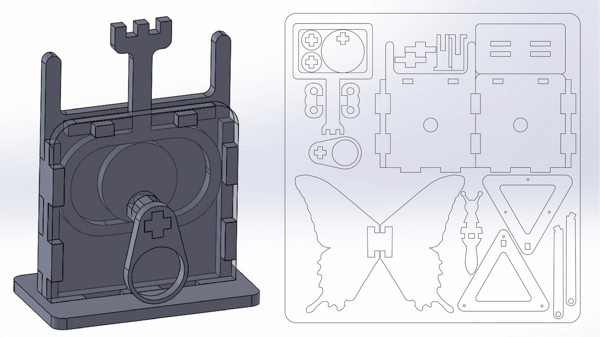
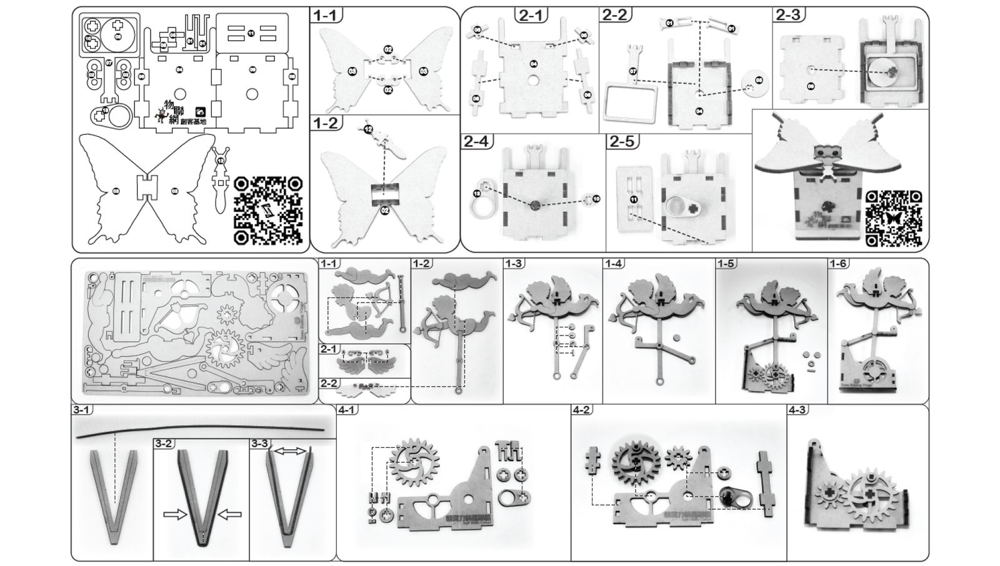
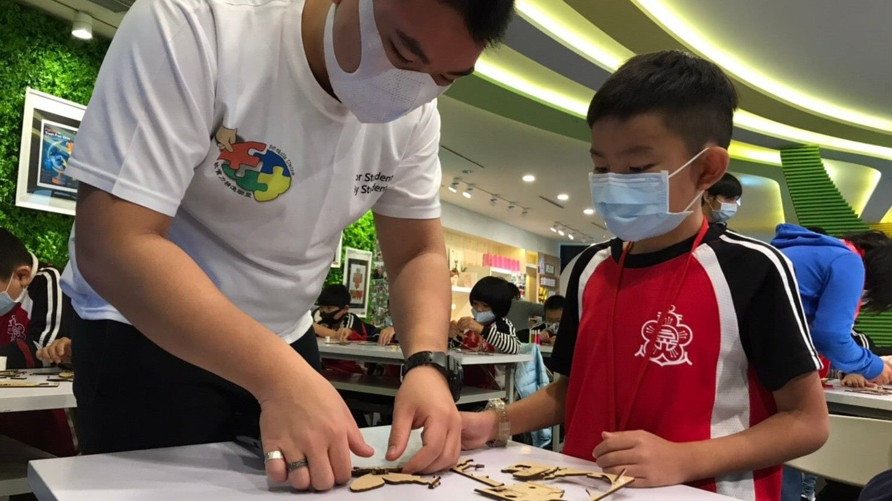

Automata are the oldest way to teach mechanisms: turn a crank, watch a cam turn into motion. I wanted a set that taught the physics and carried an ecological message — so the flagship became the Papilio Maraho, Taiwan’s endangered national butterfly.




“The automata kits are well-liked by visiting children and adults alike. The Papilio Maraho is excellent STEAM material, easy to assemble, and incorporates ecological protection — making it our most popular product.”
CX
Chen Xue YuCurator, National Taiwan Science Education Center